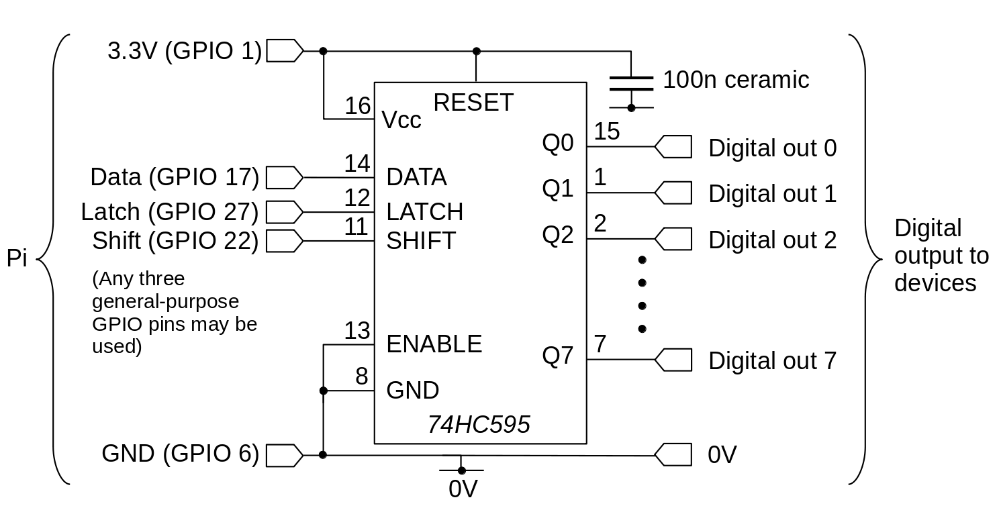

Using a shift register to control eight digital outputs with three GPIO lines on the Raspberry Pi
 For some applications, it's a problem that the Raspberry Pi has only ten
general-purpose digital output pins on its GPIO header (or even 20, if
you can re-use the special-purpose pins). This article describes a simple
way to control eight digital outputs with three GPIO pins, using a
shift register. Although I only describe how to provide eight
outputs, the technique can easily be expanded to provide any number
of outputs, by chaining shift registers together.
For some applications, it's a problem that the Raspberry Pi has only ten
general-purpose digital output pins on its GPIO header (or even 20, if
you can re-use the special-purpose pins). This article describes a simple
way to control eight digital outputs with three GPIO pins, using a
shift register. Although I only describe how to provide eight
outputs, the technique can easily be expanded to provide any number
of outputs, by chaining shift registers together.
There's nothing new about this method but, as always, I'll be explaining how it works in detail, without using poorly-documented code hidden in libraries. I'll be showing snippets of C code, but not a full application. The full application is available in my GitHub repository. I'll also be explaining the limitations of the technique, and pitfalls that arise when using it.
What is a shift register?
A shift register is a component that converts small blocks of data (typically one bit) into larger blocks of data. The 74HC595 is an 8-bit shift register, meaning that it takes one bit at a time, and assembles the bits into an 8-bit register. Each of the 8-bits in the register has its own pin on the chip, so each can be used to provide an independent digital output. The full datasheet of the chip is here.
In general, we need three digital signals to drive a traditional shift register like the 74HC595 (perhaps four -- see below).
The data line holds the bit that is to be read into the register.
The clock or shift line tells the register when a new bit is available to be shifted in.
A latch line tells the register that all the data has been provided, and the chip should transfer it to the outputs.
Each of the data, shift, and latch lines needs a GPIO pin. In my circuit diagram and sample code I use GPIO pins 17, 22, and 27, simply because they are next to one another on the header, and not used for anything else.
It's possible to use a different kind of shift register for input rather than output: such a register would latch the inputs, and then shift them into the microcontroller one bit at a time.
Shift registers like the 74HC595 can be chained. If you send nine bits to an 8-bit shift register, the first bit sent "rolls over" the end of the register. The chip has a pin that represents the 0/1 state of the bit that rolled over, and this can be fed into another shift register's data input. All the shift registers in the chain have the same data and latch signals from the controller. So we could send 24 bits (say) to three 8-bit registers, by sending the roll-over output from each register to the input of the next in the chain, and operating the shift pin 24 times, with one latch at the end.
The 74HC595 has a single-unit price of about 50p in the UK. It can be powered directly by a 3.3V supply, with its control lines connected directly to the Pi's (~3V) GPIO pins. What you probably can't do -- not reliably, at least -- is power the shift register from 5V, to get 5V outputs, while still using ~3V inputs. Looking at the data sheet (see "DC electrical characteristics") we see that the minimum high input voltage lies between 3.15 and 4.2 V with a 5V supply -- that's a bit too close for comfort.
There is a price to be paid (isn't there always?) for all this convenience. We can't keep multiplying our digital output provision by a factor of eight without losing something else. What we lose is speed. Because the data has to be clocked out of the Pi one bit at a time, and we need to clock in the whole eight bits to make one change, changing a single bit in the register is approximately eight times slower than changing a single GPIO pin.
A simple circuit
The diagram below shows the simple test circuit. Note that the digital outputs will have a high (binary 1) voltage of about 3V, roughly the same as the GPIO pins on the Pi. So these outputs can be used in more-or-less any place the original Pi outputs could. A simple test would be to connect the outputs to 0V via a 220 ohm (or thereabouts) resistor.

Note that this circuit will power up with all outputs high. The initial state is, so far as I can see, not documented -- they are all high in my tests, but probably this can't be relied on. Consequently, if the startup state is critical, you'll have to find a way to force the outputs to a specific state until the controller has had chance to set the initial output values. The ENABLE input (pin 13) can be used for this purpose. In my simple test circuit, I have this pin pulled low, so the outputs are always enabled. With this pin high, the outputs will be in a high-resistance state, so they can be pulled high or low using suitable pull-up or pull-down resistors.
You can connect the ENABLE pin to another GPIO pin, or to some simple timing circuit that provides a delay. It's worth bearing in mind that, if you use a GPIO pin, these pins are themselves in an unspecified state when the Pi starts up. So, by itself, that might not be a solution. What is a solution depends on how critical the start-up state is -- if you're controlling the cooling system for a nuclear reactor, you'll need to be more careful about this, than if you're just switching indicator lamps.
The code
Here is the important part of the C code that sets a new value to the shift register.
BYTE val = //... value to set to the outputs
for (int i = 0; i < 8; i++)
{
// Set the bit we are currently proessing onto the data pin, then...
gpiopin_set (pin_data, val & 0x01);
// ...toggle the shift pin low for ten msec
gpiopin_set (pin_shift, LOW);
usleep (10);
gpiopin_set (pin_shift, HIGH);
// Allow a short time for everything to settle before shifting in
// the next bit
usleep (10);
// Make the next bit available in the LSB of the value
val >>= 1;
}
// Set the latch pin high, indicating that all data has been
// supplied.
gpiopin_set (pin_latch, HIGH);
The function gpiopin_set() sets a specific value to the
GPIO pin -- I'm not describing that function here -- setting GPIO pins
is well-documented,
and you can look in the complete source code if you need the details.
What's important in the code is the sequence of events, which matches
the explanation I gave earlier. I use the >>
operator to shift the value of val down, so that
the least-significant
bit of val eventually becomes
"bit 7" in the output, and the most significant
bit in val becomes "bit 0". With this
mode of operation, you have to think
of the outputs being numbered in the opposite order from that which we
usually use. If this is a problem, we could just shift the bits
of val onto the data pin in the opposite order.
Performance
I mentioned earlier that the fastest a value can be changed in the shift register is about one eighth the speed at which the GPIO pins can be changed. That's sort of true, but it's worth thinking about what that means in practice.
It turns out that, with my test circuit and code, it takes about 1msec to set a specific bit in the shift register. Looking at the datasheet for the 74HC4595, it appears that we ought to be able to clock in values hundreds of million times per second. We should be able to read in eight bits in a microsecond. So why can't we?
The problem lies in the timing precision of the Pi kernel. Whatever
value is supplied to the usleep() function, the smallest
delay we can get is about 0.1 msec. Note that this is an idle
delay -- during that time, the CPU can do other things (if it has other
things to do). If we implement a busy delay, where the CPU just
cycles pointlessly for a fixed number of clock cycles, we can get much
smaller delays -- unless the kernel happens to interrupt the busy loop
to service another task.
The same, of course, applies to changing the states of the GPIO pins. That's why it's sort of true that it takes about eight times as long to change a value in the shift register as to change a GPIO pin -- I'm assuming we're using the same timing method for both.
What I'm trying to explain, in my rather ham-fisted way, is that a standard Raspberry Pi kernel isn't ideal for controlling precise, high-speed timing operations. There are nasty ways to get more precise timings -- if we don't mind burning CPU for nothing -- but they aren't ideal in a multiprocessing kernel. The relatively relaxed pace of 1msec per output change will at least be reliable.
If should also be clear that, although we can extend the number of outputs almost indefinitely by chaining shift registers together, each new shift register in the chain adds another millisecond or so to the time required to set a specific output to a new state.
Closing remarks
A simple shift register circuit can easily expand the digital output provision of a Raspberry Pi, but at a cost. Most obviously, to change a single output pin requires shifting in a whole set of values, which takes time. The extra time required is particularly unavoidable on multiprocessing systems, like the standard Pi kernel, which don't have fine timing control. In addition, some thought has to be given to ensuring that the outputs start up in the correct state when the system powers up.